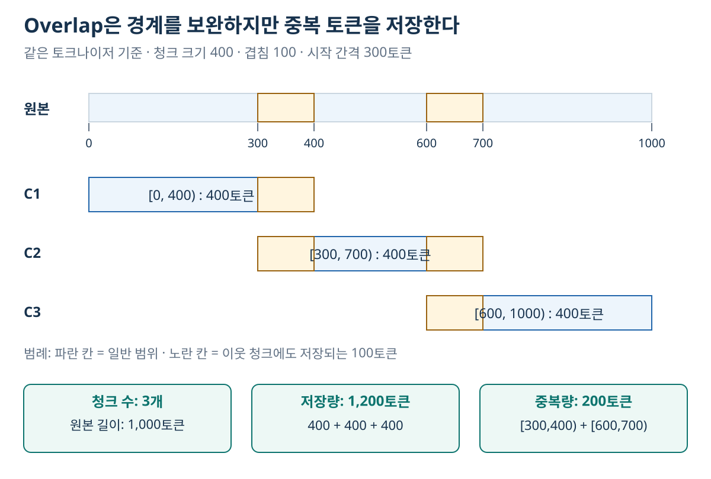
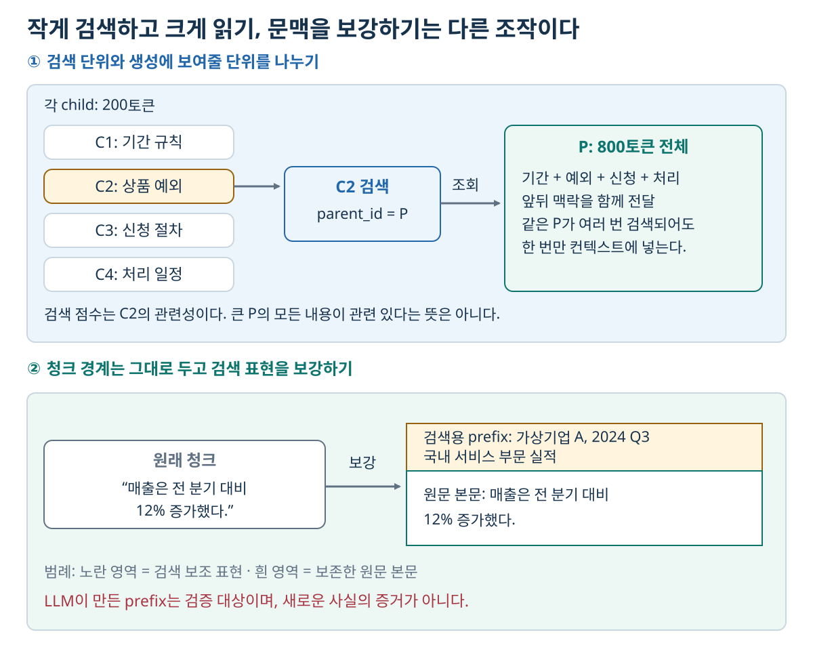

07. 청킹과 컨텍스트 구성 — 잘 찾는 단위와 잘 읽는 단위를 나누기
이전: RAG의 전체 구조 · 학습 안내 · 다음: RAG-Sequence의 학습과 디코딩
1. 해결하려는 문제: 문서를 자르면 의미도 잘릴 수 있다
긴 문서 하나를 벡터 하나로 표현하면 여러 주제가 하나의 검색 표현에 섞인다. 반대로 문장을 너무 잘게 자르면 “위 조건”, “그 회사”, 표의 숫자가 무엇을 뜻하는지 사라진다. 청킹은 단순히 길이 제한을 맞추는 작업이 아니라 검색 가능한 크기와 답변에 필요한 맥락 사이의 타협이다.
가령 다음 문서를 생각하자.
문서: 환불 정책 v3
1. 일반 상품은 구매 후 14일 이내 환불을 신청할 수 있다.
2. 단, 전자책과 소프트웨어 라이선스는 일반 환불 대상에서 제외한다.
3. 신청은 주문 페이지에서 한다.
1번만 검색되면 전자책 환불 질문에 잘못 답할 수 있다. 2번을 포함하더라도 문서 제목·버전이 사라지면 최신 규정인지 모른다. 그래서 출력 청크에는 본문뿐 아니라 원문 위치와 메타데이터가 필요하다.
| 단계 | 입력 | 출력 |
|---|---|---|
| 파싱 | 원본 PDF·HTML·텍스트 | 본문·헤더·표·페이지 같은 구조 |
| 청킹 | 구조화된 본문·길이 기준 | chunk_id, 텍스트, 원문 범위 |
| 문맥 보강 | 청크·원문 제목·섹션·필요 시 원문 전체 | 검색용 문맥이 추가된 표현 |
| 검색 | 질문·청크 인덱스 | 관련 청크 ID와 점수 |
| 컨텍스트 구성 | 검색 결과·본문 저장소·토큰 예산 | 생성 모델에 전달할 근거 묶음 |
이 장의 크기·비용 계산은 설명용 예제다. 실제 구현은 사용하는 토크나이저·파서와 데이터로 확인해야 한다.
2. 길이 단위를 먼저 정하기
chunk_size=500이라는 설정만으로는 충분하지 않다. 500글자, 공백으로 나눈 500단어, 특정 토크나이저의 500토큰은 다르다. Python text[i:i+500]은 문자열 문자 단위로 자르는 예이며 500토큰을 보장하지 않는다. 한국어와 영어의 토큰 수 비율도 문장·모델마다 달라진다.
고정 크기 L, overlap O로 전체 길이 T를 자른다고 하자. 모두 같은 단위이며 0≤O<L이다. 시작점 간격은 L−O다. T>L이고 마지막 청크를 필요한 만큼만 만든다면 청크 수는 다음과 같다.

그림 읽기: 가로축은 같은 토크나이저의 토큰 위치다. 노란 구간 [300,400), [600,700)은 이웃 청크에 두 번 저장된다. 세 띠의 길이는 각각 400토큰이므로 저장 합계는 1,200토큰이다. 문서가 1,200토큰으로 길어진 것이 아니라, 길이 1,000토큰 중 일부를 중복 저장한 것이다.
길이 1,000토큰 문서를 400토큰·overlap 100토큰으로 나누면 시작점은 0, 300, 600이다. 범위는 [0,400), [300,700), [600,1000)이고 총 3개다. 저장되는 본문 길이 합은 1,200토큰으로, 원문보다 200토큰이 중복된다. overlap이 0이면 400·400·200토큰으로 총 1,000토큰이다. 이 예에서 청크 수는 같아도 저장량과 임베딩 입력량은 다르다.
overlap은 경계 근처 사실을 함께 남기는 데 도움을 주지만, 같은 근거를 여러 번 검색하게 하고 예산을 소모할 수 있다. 문서 전체의 조건·예외를 항상 복원해 주지는 않는다.
3. 청킹 방법은 무엇을 경계로 보는가?
3.1 Fixed-size: 길이를 경계로 삼기
정해진 길이마다 자른다. 비용과 구현이 단순하고, 다른 방법을 비교할 기준선으로 쓰기 쉽다. 그러나 문장·표·코드 중간을 자를 수 있다. 청크를 짧게 만들기만 하면 검색이 좋아진다는 보장도 없다. 단서가 여러 청크로 분산되면 같은 Top-k에서 답변에 필요한 근거를 다 모으기 어려워진다.
3.2 Recursive와 sentence-aware: 문단·문장 경계를 우선하기
Recursive 방식은 문단 경계 → 줄바꿈 → 문장 → 단어·문자처럼 큰 경계부터 시도하고, 너무 긴 조각만 더 작은 경계로 나눈다. 문장 단위 packing은 문장을 순서대로 모아 크기 목표에 가까워지면 다음 청크를 시작한다. 둘은 관련된 접근이지만 동일한 알고리즘은 아니다. separator, 길이 함수, 문장 분리 규칙이 결과를 바꾼다.
예를 들어 문장 길이가 180·170·190토큰이고 상한이 400토큰이라면 앞의 두 문장을 350토큰 청크로 묶고, 마지막 문장을 190토큰 청크로 둘 수 있다. 하나의 문장이 상한보다 길다면 별도의 분할 규칙이 필요하다. “문장을 보존한다”는 목표와 “항상 상한을 지킨다”는 목표가 충돌하는 경우다.
3.3 Semantic: 의미 변화량을 경계로 삼기
문장 임베딩 간 거리가 크게 변하는 위치를 찾아 나눈다. 문장 벡터 u,v에 대해 cosine distance를 1−cos(u,v)로 정의하면 주제가 갑자기 바뀌는 곳에서 거리가 커질 수 있다.
| 인접 문장 | cosine similarity | distance |
|---|---|---|
| S1–S2 | 0.95 | 0.05 |
| S2–S3 | 0.90 | 0.10 |
| S3–S4 | 0.30 | 0.70 |
| S4–S5 | 0.92 | 0.08 |
설명용 임계값을 0.40으로 두면 S3 뒤에서 자른다. 그러나 “환불 가능” 다음의 “단, 전자책은 제외”가 의미적으로 달라 보인다는 이유로 떨어지면 질문에 필요한 규칙·예외 관계가 깨진다. 의미 변화 탐지가 답변에 필요한 논리적 묶음과 항상 같은 것은 아니다.
의미 경계를 정하는 다음 변종도 구별한다.
- 인접 거리 기반: 주변 문장을 임베딩하고 거리의 percentile 같은 기준으로 경계를 정한다. 임계값과 문장 분리 품질의 영향을 받는다.
- ClusterSemanticChunker 계열: 여러 문장의 유사도를 이용해 청크 묶음을 최적화한다. 인접 거리 하나로 즉시 자르는 방식과 다르다. 구체적인 목적함수·제약은 구현을 확인해야 한다.
- LLM 기반: 모델에게 의미 경계를 정하도록 요청한다. 호출 비용, 출력 형식 오류, 같은 원문의 경계가 바뀔 가능성도 관리해야 한다.
세 방식 모두 문장 표현이나 LLM 실행 비용을 추가한다. Semantic이라는 이름만으로 다른 방법보다 우수하다고 판정하지 않는다.
3.4 Structural: 저자가 만든 문서 구조를 경계로 삼기
Markdown 헤더, HTML 태그, 코드의 함수·클래스, PDF 섹션을 이용한다. 제목 경로를 각 청크의 메타데이터나 검색용 prefix에 보존하면 “이 숫자가 어느 분기의 값인가?”를 찾기 쉬워진다.
| 변종 | 경계 | 장점 | 실패할 수 있는 조건 |
|---|---|---|---|
| 헤더 기반 | 제목·소제목 | 저자의 논리 구조 보존 | 섹션이 너무 크거나 헤더가 부정확함 |
| Page-level | PDF 페이지 | 출처 페이지와 표·캡션 추적이 쉬움 | 표·문장이 다음 페이지로 이어짐 |
| Section-level | PDF에서 검출한 섹션 | 논리 단위로 묶기 쉬움 | 레이아웃 파서의 헤더 검출 오류 |
| 코드 구조 | 함수·클래스 | 기능 단위 보존 | 의존 함수·상위 클래스가 따로 존재 |
표는 헤더와 행을 함께 보존하고, 그림은 캡션·주변 설명·원문 위치를 연결해야 한다. 텍스트 추출만으로 표의 열 관계가 유지되는지 확인하지 않으면, 정교한 청킹도 잘못 읽힌 데이터를 해결하지 못한다.
3.5 Contextual: 경계 변경보다 검색 표현 보강하기
Contextual Retrieval은 조각마다 원문에서의 위치·주제를 설명하는 문맥을 붙여 검색 표현을 보강한다. 엄밀히는 청크 경계를 정하는 방법과 분리 가능한 단계다. Fixed·recursive·structural로 자른 결과에도 적용할 수 있다.
원래 청크: "매출은 전 분기 대비 12% 증가했다."
검색용 보강: "가상기업 A의 2024년 3분기 실적, 국내 서비스 부문.
매출은 전 분기 대비 12% 증가했다."
제목·날짜를 메타데이터에서 그대로 붙이는 결정적 보강과, LLM이 원문 전체를 읽고 문맥을 생성하는 보강을 구별한다. LLM prefix는 원문이 아니라 생성된 보조 텍스트이므로, 잘못된 회사명·날짜를 넣으면 검색이 오염된다. 원문과 생성 prefix를 따로 저장하고, 원문에서 확인되지 않는 정보를 최종 답변의 증거로 취급하지 않는다.
비용은 주로 인덱싱 때 발생한다. 100개 문서를 각 10개 청크로 나누고 청크당 1회 문맥 생성을 한다면 1,000회의 호출이 필요하다. 문서 전체가 8,000토큰이고 매 호출마다 전부 입력하면 문서 부분만 800만 입력 토큰이다. 캐싱 여부·재사용 조건·출력량에 따라 비용이 달라진다. 고정된 “백만 문서 토큰당 가격”을 모든 시스템에 그대로 적용하지 않는다.
4. 작은 단위로 찾고 큰 단위로 읽기

그림 읽기: 위쪽은 200토큰 C2를 검색한 뒤 연결된 800토큰 P를 가져오는 흐름이다. 아래쪽은 청크 경계를 바꾸지 않고 회사·시점의 검색 보조 표현을 덧붙인다. 둘은 함께 쓸 수도 있다. 검색된 child 점수를 parent 전체의 관련성으로 확대 해석하지 않으며, LLM이 만든 prefix를 새로운 사실의 증거로 취급하지 않는다.
검색 단위와 최종 컨텍스트 단위를 같게 둘 필요는 없다. Parent–Child Retrieval은 작은 child를 검색한 뒤, 연결된 큰 parent를 가져온다.
Parent P: 환불 정책의 일반 규칙·상품 예외·신청 방법 (800토큰)
├─ Child C1: 기간 규칙 (200토큰) → 검색 벡터
├─ Child C2: 상품 예외 (200토큰) → 검색 벡터
├─ Child C3: 신청 절차 (200토큰) → 검색 벡터
└─ Child C4: 처리 일정 (200토큰) → 검색 벡터
질문 → C2 검색 → parent_id=P 조회 → P 본문을 생성기에 전달
| 방식 | 검색하는 단위 | 모델에 넣는 단위 |
|---|---|---|
| Parent–Child | 작은 child 청크 | 지정된 parent |
| Sentence window | 한 문장 | 주변 문장과 함께 확장한 범위 |
| Auto-merging | 계층의 작은 청크 | 같은 parent의 검색 결과가 충분할 때 병합한 상위 단위 |
같은 parent의 child 세 개가 검색되었다면 parent를 세 번 넣지 않도록 중복 제거한다. 부모·자식은 같은 버전이어야 하고, parent의 다른 절에도 접근 권한이 있는지 확인해야 한다. Child 검색 점수를 큰 parent 전체의 관련성 점수처럼 해석하지 않는다. 확장된 parent가 토큰 예산을 넘으면 다시 필요한 범위를 선택해야 한다.
5. 메타데이터 필터는 단순한 편의 기능이 아니다
청크에는 문서 ID·절·페이지·버전·날짜·언어·접근 범위를 저장할 수 있다. 질문이 “2025년 정책”이면 날짜 조건이, 사용자별 문서라면 인증된 사용자 정보에 따른 접근 조건이 검색의 일부가 된다. 권한 조건을 질문 텍스트나 LLM의 추측으로 결정하지 않는다.
- Pre-filter: 접근 가능하고 조건에 맞는 집합 안에서 검색한다. 유효한 결과가 충분하다면 그 안에서 Top-k를 확보할 수 있다.
- Post-filter: 전체에서 먼저 후보를 뽑고 조건에 맞지 않는 결과를 제거한다. Top-10 중 9개가 제거되면 1개만 남는다. 애초에 접근 가능한 2위·3위 문서는 초기 Top-10 밖에 있어 누락될 수 있다.
Pre-filter라는 이름만으로 정확도·속도가 보장되지는 않는다. 필터와 ANN이 어떻게 결합되는지, 검색 조건에 맞는 데이터가 몇 개인지, 엔진의 재탐색 동작이 무엇인지 확인해야 한다. 후처리 방식이어도 허용되지 않은 본문을 외부 모델에 보내기 전에 접근 검사를 끝내야 한다.
6. 검색 결과를 컨텍스트로 만들기
- 검색 결과의 접근 권한·버전·원문 위치를 확인한다.
- 같은 문서·overlap의 중복 범위를 정리한다.
- 필요하면 parent·문장 window로 확장한다.
- 질문의 모든 요구에 필요한 근거가 있는지 살핀다.
- 토큰 예산 안에서 우선순위를 정하고, 인용 ID를 붙인다.
이 과정에서 무조건 긴 청크를 앞에 놓거나 많이 넣는다고 좋은 것은 아니다. 중복이 예산을 차지할 수 있고, 서로 다른 조건·버전이 혼합될 수 있다. 요약·압축을 사용한다면 숫자·부정·예외·출처를 잃지 않았는지 확인해야 한다.
7. 평가 결과는 조건과 지표를 함께 읽는다
청킹을 검색 단계에서 평가할 때에는 정답 근거의 회수 정도와 불필요한 영역의 양을 본다. 생성까지 평가할 때에는 최종 답변의 정확성을 본다. Recall·Precision·IoU와 Answer Accuracy는 측정 대상이 다르므로, 서로 다른 조건의 표에서 숫자만 비교해 하나의 청킹 우승자를 뽑지 않는다.
다음은 청킹 비교표를 해석하기 위한 과거 보고 사례다. 이 교재에서 재실행한 측정값은 아니다. 조건은 609개 영문 기사, 250개 표본 질문, 검색 Top-6, Hybrid+RRF 고정, 생성·판정 모델은 Haiku 4.5다. Judge가 답변을 correct·partial·incorrect로 분류하고 Accuracy = (correct + 0.5×partial)/n으로 계산하므로 아래 값은 단순 이진 정답률과 다르다.
| 청킹 | 사례의 크기 조건 | 사례 보고 Accuracy |
|---|---|---|
| Fixed small | 400자, overlap 80 | 46.4% |
| Fixed large | 1,200자, overlap 200 | 49.2% |
| Recursive | target 800 | 50.4% |
| Sentence-aware | 약 800자 | 50.6% |
| Semantic | 인접 문장 cosine 기준 병합 | 48.2% |
이 사례에서는 문장 경계를 보존한 두 방식이 높았지만 0.2%p 차이만으로 우열이 확실하다고 판단하지 않는다. 전체 2,556문항 중 표본 250개이며 생성기와 judge가 같은 모델 계열이므로, 표본 변동과 판정 편향을 고려해야 한다. 자신의 문서·언어·질문에서 같은 순위를 기대하지 말고, 검색 recall과 답변 품질·저장량·비용을 함께 측정한다.
8. 스스로 확인하기
- 1,000토큰 문서를 크기 400·overlap 100으로 자르면 총 저장 본문은 몇 토큰인가?
- 의미가 달라지는 지점마다 자르는 것이 환불 규칙과 예외를 항상 잘 보존하는가?
- C1·C2가 같은 parent에 속하고 둘 다 검색되었다. parent를 두 번 넣어야 하는가?
- Top-10을 검색한 뒤 권한 필터로 9개를 제거했다. “접근 가능한 관련 문서가 하나뿐”이라고 결론 내려도 되는가?
- Contextual prefix를 LLM이 생성했다면 그것만을 근거로 새 사실을 답해도 되는가?
학습용 해설
[0,400),[300,700),[600,1000)이므로 1,200토큰이다. 중복 200토큰이 포함된다.- 아니다. 규칙과 예외는 표현이 달라도 함께 필요할 수 있다. 청킹은 주제뿐 아니라 논리 관계·답변 요구를 고려한다.
- 같은 버전·권한의 동일 parent라면 한 번 넣고 child 근거 범위를 함께 기록할 수 있다.
- 아니다. 접근 가능한 관련 문서가 초기 Top-10 밖에 있을 수 있다. 필터 안에서 재검색하거나 후보 확대 등의 처리가 필요하다.
- 아니다. 원문에 근거한 보조 표현인지 검증해야 한다. 생성 prefix와 원문을 구분해서 저장한다.